问天
01 / 14
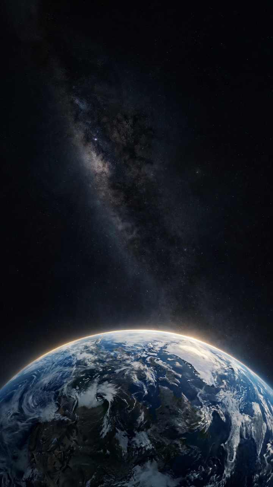
01 / 天启
问天
仰望星空，问天的起点
一颗星，穿过漫长的黑暗。
从仰望开始，人类第一次把目光投向宇宙。
从仰望开始，人类第一次把目光投向宇宙。

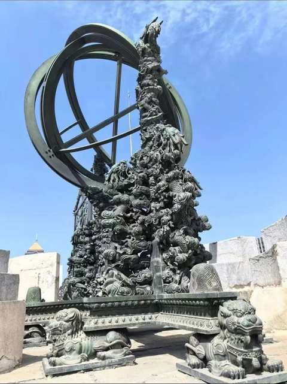
02 / 仰观星河
古人有星图
把天空写进秩序，也写进想象
星宿、方位、节律与四时。
古人用自己的方式理解头顶这片天空。
古人用自己的方式理解头顶这片天空。

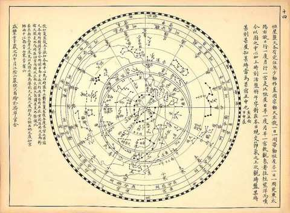

03 / 古脉溯源
星落成墨
古籍、星图与千年的观天记录
当一颗星落在纸上，天上的秩序便有了可以传承的形状。

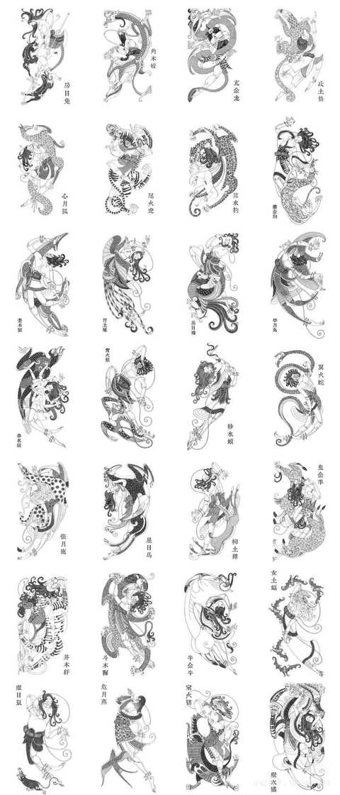
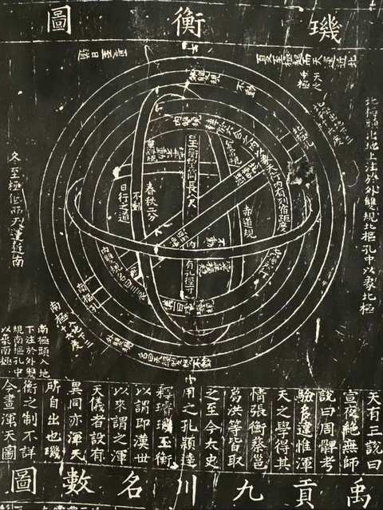

04 / 穿越千年
星图没有消失
只是我们看星星的方式变了
一条墨线延伸成轨道。
从古人的星图，走向今天的航天时代。
从古人的星图，走向今天的航天时代。
05 / 青铜观天
以器测天
浑仪 · 经纬 · 璇玑
青铜铸成的精密。
每一件仪器，都是古人触摸星空的手。
每一件仪器，都是古人触摸星空的手。
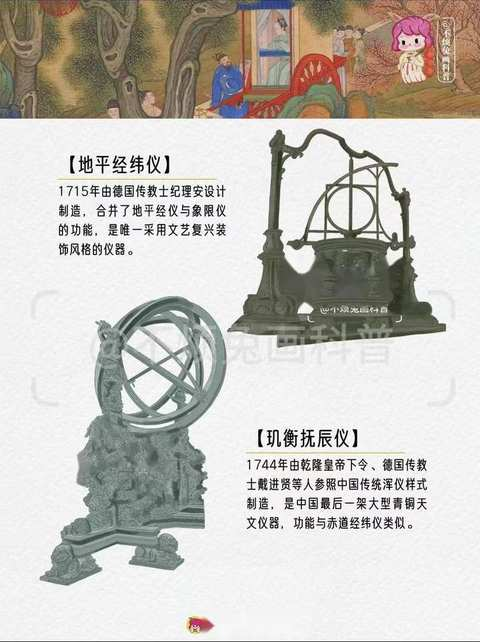
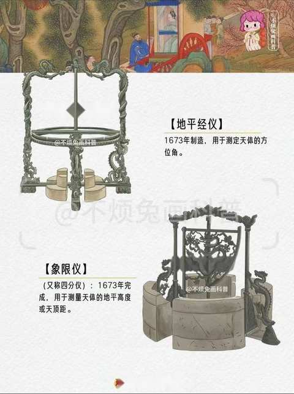
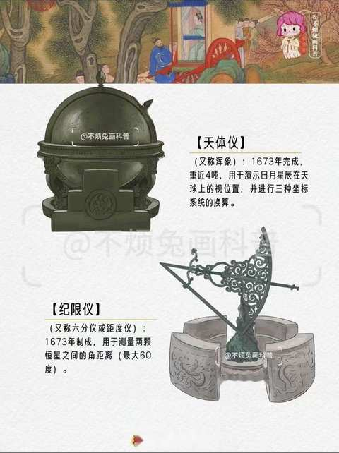
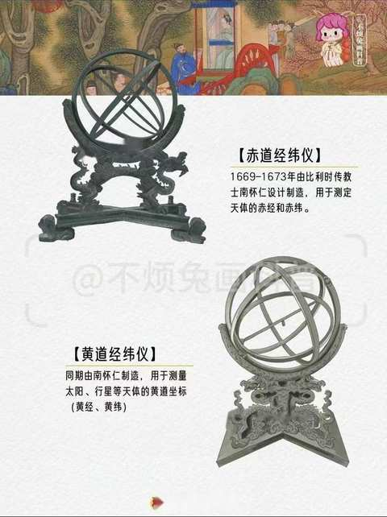
06 / 栉风沐雨
百年求索
把真实的历史留在画面里
从钱学森等先辈，到无数无名的科研工作者。
中国航天从这里一步步走来。
中国航天从这里一步步走来。

07 / 从零到一
没有一步登天
东方红一号 · 长征系列
从第一颗人造卫星，到一代代运载火箭。
每一次高度，都建立在前一次坚持之上。
每一次高度，都建立在前一次坚持之上。
08 / 天宫揽月
进入太空
穿出大气层，看见地球
火焰熄灭之后，地球开始缓慢旋转。
我们第一次真正站在星球之外看它。
我们第一次真正站在星球之外看它。
天宫
北斗
天问
嫦娥
09 / 盛世问天
新的星图
天宫 · 嫦娥 · 天问 · 北斗
古代星图记录我们仰望的天空。
今天，它正在被中国的航天器重新绘制。
今天，它正在被中国的航天器重新绘制。
10 / 问天足迹
一步一印
卫星 · 飞船 · 月球车
从东方红到玉兔号。
每一步，都算数。
每一步，都算数。


11 / 回望
从观星到深空
我们已经走得很远
镜头慢慢拉远。
所有宏大的航迹，最终都回到这颗蓝色星球。
所有宏大的航迹，最终都回到这颗蓝色星球。


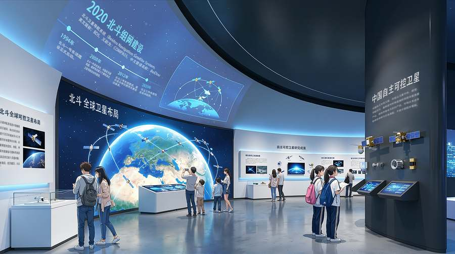

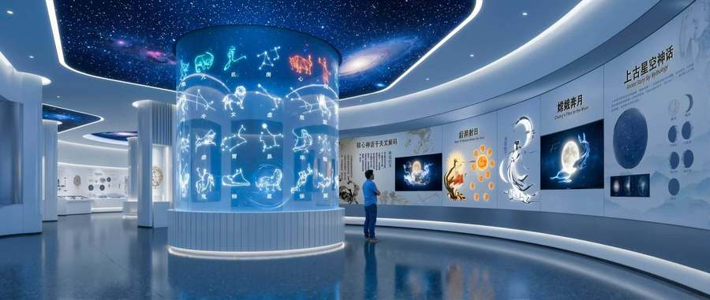

12 / 星河共赴
未来没有答案
下一段航程，由你来定义
深空仍然辽阔。
下一章，不只是观看，而是参与。
下一章，不只是观看，而是参与。
13 / 我的未来航天任务
选择你的航程
点击切换每项的两种可能，生成属于你的未来任务。
01身份
未来航天员深空科学家
02目的地
月球基地火星轨道
03飞船
深空探索舰轨道母船
04任务
寻找水源观测宇宙
14 / 我的宇宙档案
星河共赴
你的未来航天档案
未来航天员 · 月球基地 · 深空探索舰 · 寻找水源
↑上滑进入下一章
轻触屏幕，开始探索